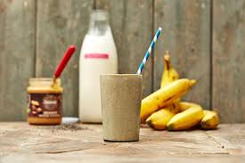

Drinking homemade protein smoothies can be a highly nutritious and quick way to gain weight.
Making your own smoothies is the best way since commercial versions are often full of sugar and lack nutrients. It also gives you full control over the flavor and nutrient content.
Here are just a few tasty variations you can try. You can combine each with 2 cups (470 ml) of milk or an alternative like almond milk.
Chocolate banana nut shake: Combine 1 banana, 1 scoop of chocolate whey protein and 1 tablespoon (15 ml) of peanut or another nut butter.
Vanilla berry shake: Combine 1 cup (237 ml) of fresh or frozen mixed berries, ice, 1 cup (237 ml) of high-protein natural yogurt and 1 scoop of vanilla whey protein.
Chocolate hazelnut shake: Combine 15 ounces (444 ml) of chocolate milk with 1 scoop of chocolate whey protein, 1 tablespoon (15 ml) of hazelnut butter and 1 avocado.
The Five Best Healthy Foods to Gain Weight Fast
1. Homemade Protein Smoothies:-


2. Milk:-
Milk has been used as a weight gainer or muscle builder for decades (1Trusted Source).
It provides a good balance of proteins, carbs and fats and is a good source of calcium, as well as other vitamins and minerals.
For those trying to add more muscle, milk is an excellent protein source that provides both casein and whey proteins. Research has even shown it can help you add muscle when combined with weight lifting (3Trusted Source, 4Trusted Source).
Additionally, studies have found that milk, or whey and casein combined, can lead to greater mass gain than other protein sources (4Trusted Source, 5Trusted Source).
Try drinking around one or two glasses as a snack, with a meal, or before and after a workout if you are training.
It provides a good balance of proteins, carbs and fats and is a good source of calcium, as well as other vitamins and minerals.
For those trying to add more muscle, milk is an excellent protein source that provides both casein and whey proteins. Research has even shown it can help you add muscle when combined with weight lifting (3Trusted Source, 4Trusted Source).
Additionally, studies have found that milk, or whey and casein combined, can lead to greater mass gain than other protein sources (4Trusted Source, 5Trusted Source).
Try drinking around one or two glasses as a snack, with a meal, or before and after a workout if you are training.
3. Rice
Rice is a convenient, low-cost carb source to help you gain weight. Just 1 cup (165 grams) of cooked rice provides 190 calories, 43 grams of carbs and very little fat (6).
It is also fairly calorie-dense, meaning you can easily obtain a high amount of carbs and calories from a single serving. This helps you eat more food, especially if you have a poor appetite or get full quickly.
When you’re on the go or in a rush, two-minute packs of microwavable rice can be easily added to other protein sources and pre-made meals.
It is also fairly calorie-dense, meaning you can easily obtain a high amount of carbs and calories from a single serving. This helps you eat more food, especially if you have a poor appetite or get full quickly.
When you’re on the go or in a rush, two-minute packs of microwavable rice can be easily added to other protein sources and pre-made meals.
4. Nuts and Nut Butters
Nuts and nut butters are a perfect choice if you're looking to gain weight.
Just one small handful of almonds contains over 7 grams of protein and 18 grams of healthy fats (8).
Since they’re very calorie-dense, just two handfuls per day with a meal or as a snack can quickly add hundreds of calories.
Nut butters can also be added to a variety of snacks or dishes, such as smoothies, yogurts and much more.
However, make sure you pick 100% nut butters with no added sugar or extra oils.
Just one small handful of almonds contains over 7 grams of protein and 18 grams of healthy fats (8).
Since they’re very calorie-dense, just two handfuls per day with a meal or as a snack can quickly add hundreds of calories.
Nut butters can also be added to a variety of snacks or dishes, such as smoothies, yogurts and much more.
However, make sure you pick 100% nut butters with no added sugar or extra oils.
5. Potatoes and Starches
Potatoes and other starchy foods are a very easy and cost-effective way to add in extra calories.
Try to choose one of these healthy sources of starchy carbs:
Quinoa
Oats
Corn
Buckwheat
Potatoes and sweet potatoes
Squash
Winter root vegetables
Beans and legumes
Not only do potatoes and other starches add carbs and calories to help you gain weight — they also increase your muscle glycogen stores.
Glycogen is the predominant fuel source for most sports and activities (12Trusted Source, 13Trusted Source).
Many of these carb sources also provide important nutrients and fiber, as well as resistant starch, which can help nourish your gut bacteria. br
Try to choose one of these healthy sources of starchy carbs:
Quinoa
Oats
Corn
Buckwheat
Potatoes and sweet potatoes
Squash
Winter root vegetables
Beans and legumes
Not only do potatoes and other starches add carbs and calories to help you gain weight — they also increase your muscle glycogen stores.
Glycogen is the predominant fuel source for most sports and activities (12Trusted Source, 13Trusted Source).
Many of these carb sources also provide important nutrients and fiber, as well as resistant starch, which can help nourish your gut bacteria. br